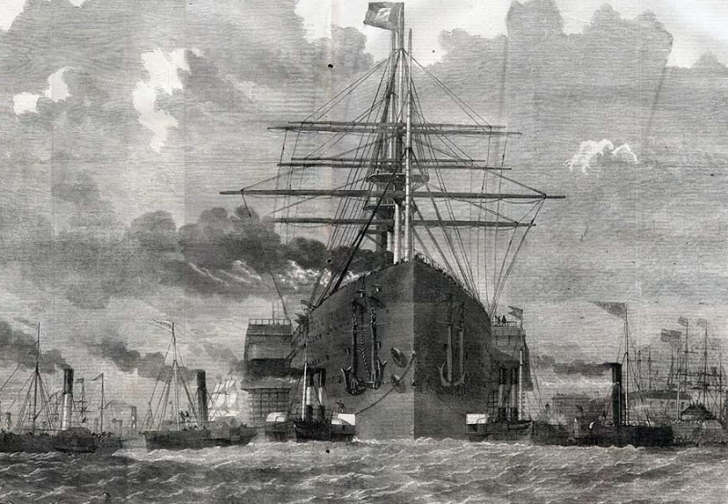
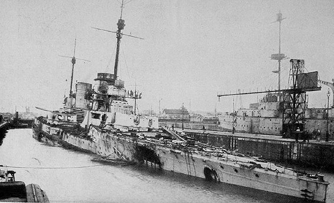
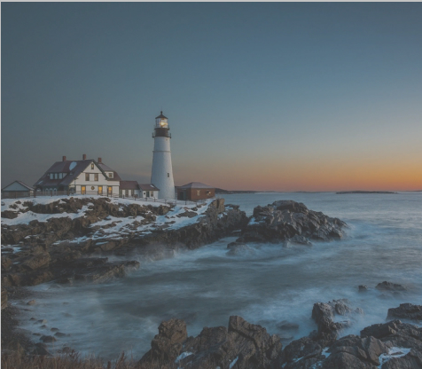

Северное
море
Учебная практика студента 1-го курса
Баширова Р.Э.
Предистория
Археологические находки указывают на то, что территория, которая сейчас включает Северное море, возможно, была большой площадью равнин в доисторические времена, примерно до 8000-6000 до н. э. полученные данные свидетельствуют о том, что этот район был заселен до того, как его затопило поднявшейся водой в конце последнего ледникового периода. В 2008 году находка примерно 28 ручных топоров каменного века в материале со дна Северного моря усилила свидетельства существования человеческих поселений в этом районе.
Римская империя
Первое исторически подтвержденное интенсивное использование Северного моря было римлянами в 12 г. до н. э., когда Нерон Клавдий Друз построил и запустил флот из более чем тысячи кораблей в Северное море, завоевав коренные племена, включая фризов и Чауциев. К 5 году до н. э. римские знания о море были значительно расширены до Эльбы военной экспедицией под командованием Тиберия.
Викинги
Нападение на Линдисфарн в 793 году принято считать началом эпохи викингов. В течение следующих 250 лет скандинавские рейдеры из Норвегии, Швеции и Дании доминировали в Северном море, совершая набеги на монастыри, дома и города вдоль побережья и вдоль рек, протекавших вглубь страны. Согласно Англосаксонской хронике, они начали селиться в Британии в 851 году. Они продолжали селиться на Британских островах и континенте примерно до 1050 года.
Нидерланды
В 16 веке Нидерланды стали самой выдающейся экономической державой в мире. Для голландского торгового флота Северное море служило скорее отправной точкой для их океанских путешествий. Он стал воротами и важнейшим выходом, позволяющим голландским торговцам напрямую выходить на мировые рынки.
В 1651 году Англия приняла навигационные акты, которые нанесли ущерб голландским торговым интересам. Разногласия по поводу этих актов привели к Первой англо–голландской войне , которая продолжалась с 1652 по 1654 год и завершилась Вестминстерским договором (1654) , по которому голландцы были вынуждены признать эти акты.
В 1665 году англичане объявили войну голландцам, начав Вторую англо-голландскую войну . При поддержке французов, которые между войной вошли в Испанские Нидерланды —нынешнюю Бельгию, голландцы одержали верх. В 1667 году, после уничтожения адмиралом де Рейтером значительной части британского флота на реке Медуэй, англичане и голландцы подписали бредский мирный договор, согласно которому англичане должны были принять управление голландскими владениями в Северной Америке (современный Нью-Йорк), в то время как голландцы получат Суринам с английского же языка и были внесены поправки в навигационные акты.
1672 год известен в Нидерландах как "Rampjaar", год бедствия. Англия снова объявила войну Нидерландам, начав третью англо-голландскую войну, и вскоре за ней последовали Франция , принц-епископство Мюнстера и архиепископство Кельна в союзе против голландцев. Три континентальных союзника наступали на Нидерланды, в то время как высадка английских войск вдоль побережья была едва предотвращена. Наводнив части страны, лежащие ниже уровня моря, Вильгельм Оранский смог сдержать дальнейшее наступление и победу голландцев в битве при Солебее это позволило голландцам просить мира. Однако восхождение голландского принца Уильяма на английский престол, после свержения католической династии Стюартов, в ходе Славной революции вызвало драматический сдвиг в коммерческой, военной и политической власти от Амстердама к Лондону. Этот сдвиг в сочетании с постоянными войнами против различных врагов и экономическим спадом вытеснил Нидерланды из верхнего эшелона европейских держав к концу войны за Испанское наследство .
_-_De_verovering_van_het_Engelse_admiraalschip_de_'Royal_Prince'.jpg)
Англия
Восхождение Англии к главенствующей морской силе мира началось в 1588 году, когда попытка вторжения испанской Армады потерпела поражение в результате сочетания выдающейся морской тактики англичан под командованием сэра Фрэнсиса Дрейка и нарушения плохой погоды. Укрепленный английский флот вел несколько войн со своими соседями по Северному морю и к концу 17-го века стер голландскую империю, ранее охватывавшую весь мир.
Создание Британской империи как области, на которой никогда не заходит солнце, было возможно только потому, что британский флот осуществлял бесспорный контроль над морями вокруг Европы, включая Северное море. В конце XVIII века британское военно-морское превосходство столкнулось с новым вызовом со стороны наполеоновской Франции и ее континентальных союзников. В 1800 году для защиты нейтральной торговли во время британского конфликта с Францией был образован Союз малых морских держав, получивший название Лига вооруженного нейтралитета. Британский флот разгромил объединенные силы лиги в битве при Копенгагене в 1801 году в Каттегате.Французские планы вторжения в Британию были сосредоточены на английском канале , но ряд неудач и решительная победа британского флота в Трафальгарской битве у берегов Испании положили им конец.
19-й век
Во время Первой Шлезвигской войны (1848-1851 гг.), Крымской войны (1854-1856 гг.) и второй Шлезвигской войны (1864 г.) воюющие стороны предприняли шаги по сокращению или ликвидации торговли в Северном море со стороны своих врагов. Во время Первой Шлезвигской войны Дания смогла остановить морскую торговлю Германии в Северном море, а во время Второй-ввела пошлины на суда, пересекающие Датский пролив между Балтийским и Северным морями. Во время Крымской войны британские и французские экспедиции были направлены в Балтийское море, чтобы помешать выходу русских кораблей в Северное море, хотя они почти не участвовали в боевых действиях.
Австро-прусская война (1866) привела к тому, что Пруссия получила полный контроль над Кильским каналом, что позволило их балтийским портам получить доступ к Северному морю.
Франция объявила войну Пруссии 19 июля 1870 года, что положило начало франко-прусской войне (1870-1871). В то время французский флот был намного больше и превосходил Северогерманский федеральный флот, Военно-Морской Флот северогерманской Конфедерации . Хотя французы действительно захватили ряд торговых судов, направляющихся в Северную Германию и из нее, нехватка рабочей силы и угля, а также противоречивые приказы сделали попытку блокады прусских портов неэффективной.[30] Французы планировали морскую атаку на побережье Северного моря, чтобы ослабить ожидаемое давление на фронте в Эльзасе и Лотарингии. Однако этот берег, на котором с самого начала было трудно ориентироваться, до войны был сильно укреплен.Броненосцы этого времени состояли из бортовой турели и новых казематных броненосцев, которые защищали вращающуюся башню.
Первая Мировая война
Во время Первой мировой войны Большой британский флот , базирующийся в Скапа-Флоу, и немецкий Kaiserliche Marine столкнулись друг с другом через Северное море.
Благодаря своему численному превосходству в дредноутах , великий флот получил военно-морское превосходство и смог установить морскую блокаду побережья Германии. Цель блокады состояла в том, чтобы лишить Германию доступа к морской торговле, включая военные материалы, и гарантировать беспрепятственную переброску британских войск. Из-за сильной оборонительной крепости Гельголанд немцы контролировали немецкую бухту , в то время как остальная часть Северного моря и Ла-Манш на протяжении всей войны находились под контролем Королевского флота.
6 августа 1914 года началась кампания немецких подводных лодок – через два дня после того, как Великобритания объявила войну Германии из-за немецкого вторжения в Бельгию , десять немецких подводных лодок покинули свою базу в Гельголанде, чтобы атаковать военные корабли Королевского флота в Северном море.
Первая морская битва, Битва при бухте Гельголанд, состоялась 28 августа 1914 года и завершилась явной победой британцев. Из - за превосходства британского надводного флота немцы начали подводную войну. После нескольких неудач немецкая подводная лодка SM U-9 сумела потопить три британских броненосных крейсера примерно в 50 километрах к северу от Хук-ван-Холланда , недалеко от Северного морского входа в Ла-Манш.
В ноябре 1914 года англичане объявили все Северное море зоной военных действий, и оттуда оно было заминировано. корабли, которые плавали в Северном море под флагами нейтральных стран, не давая британцам предварительного предупреждения, могли быть целью британского нападения.
31 мая и 1 июня 1916 года состоялось самое крупное в мировой истории морское сражение-Ютландское сражение , если судить по количеству участвовавших в нем кораблей (238). Немецкая цель существенного ослабления британского флота путем потопления значительной его части и прекращения блокады не была достигнута. Хотя немцы одержали тактическую победу, их основной флот едва избежал уничтожения, и они вновь возложили свои надежды на неограниченную подводную войну.
Поскольку война заканчивалась и шла вразрез с желаниями нового немецкого режима, 28 октября 1918 года был отдан приказ о последнем нападении на британский флот. Однако вспышка вильгельмсхафенского мятежа в Киле положила конец морской войне. Мятеж был также решающим шагом в начале Ноябрьской революции .
Политический статус
Хотя фактический контроль над Северным морем играл решающую роль в политических властных отношениях в Северо-Западной Европе со времен викингов и стал вопросом мировой политики после Первой англо-голландской войны , вплоть до окончания Второй мировой войны приграничные страны официально претендовали не более чем на узкие прибрежные воды. За последние несколько десятилетий многое изменилось.
Все страны, граничащие с Северным морем, претендуют на 12 морских миль (22 км) территориальных вод, в пределах которых они имеют, например, исключительные права на рыболовство. Исландия, однако, в результате тресковых войн имеет исключительные рыболовные права на 200 миль (320 км) от своего побережья, в части Северного моря. Общая рыбохозяйственная политика ЕС существует для координации прав рыболовства и оказания помощи в разрешении споров между государствами ЕС и приграничным государством ЕС-Норвегией.
После открытия минеральных ресурсов в Северном море Норвегия заявила о своих правах в соответствии с Конвенцией О континентальном шельфе, и другие страны на море последовали ее примеру. Эти права в значительной степени разделены по срединной линии, определяемой как линия, "каждая точка которой равноудалена от ближайших точек исходных линий, от которых измеряется ширина территориального моря каждого государства." Только для границы между Германией, Нидерландами и Данией дно океана было иным образом разделено после длительных переговоров и решения Международного суда согласно которому Германия, в силу своего географического положения, получила меньший участок океанского дна по отношению к своей береговой линии, чем другие спорящие стороны.
Что касается охраны окружающей среды и загрязнения морской среды, то в соответствии с соглашениями МАРПОЛ 73/78 были созданы 25 - и 50-мильные (40 и 80 км) зоны охраны. Кроме того, Конвенция о защите морской среды Северо-Восточной Атлантики непосредственно касается вопроса о сохранении океана в регионе. Германия, Дания и Нидерланды имеют трехстороннее соглашение о защите Ваттового моря , или грязевых отмелей , которые проходят вдоль берегов трех стран на южной оконечности Северного моря.
С момента своего создания в 2003 году Европейское агентство по безопасности на море осуществляло мониторинг и координацию всех морских перевозок через это море. Хотя агентство является частью ЕС, места в агентстве занимают государства, не являющиеся его членами, Норвегия и Исландия, поскольку они непосредственно затронуты этим вопросом.